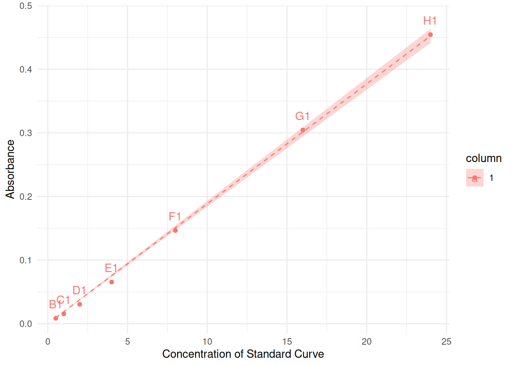
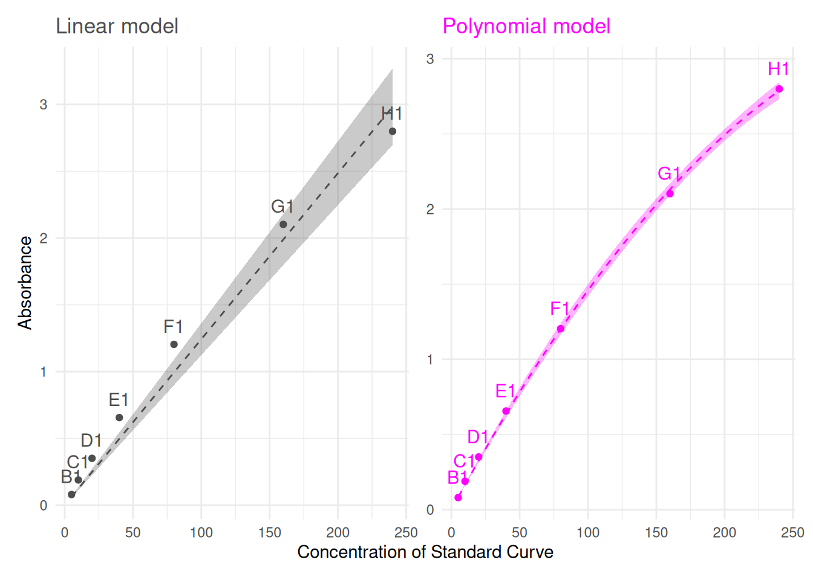
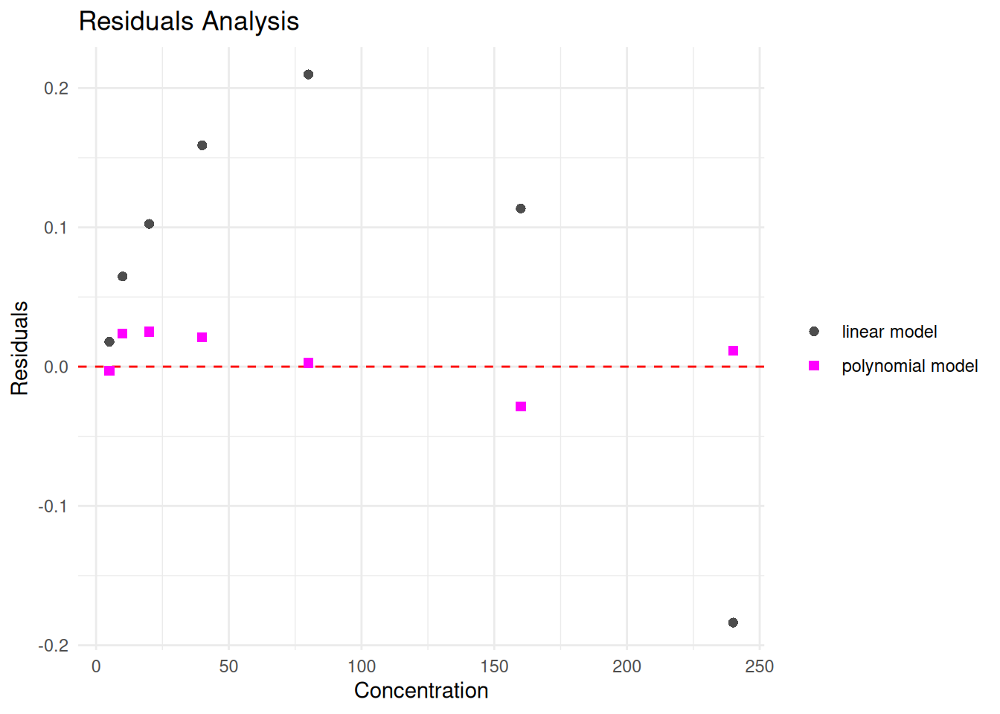
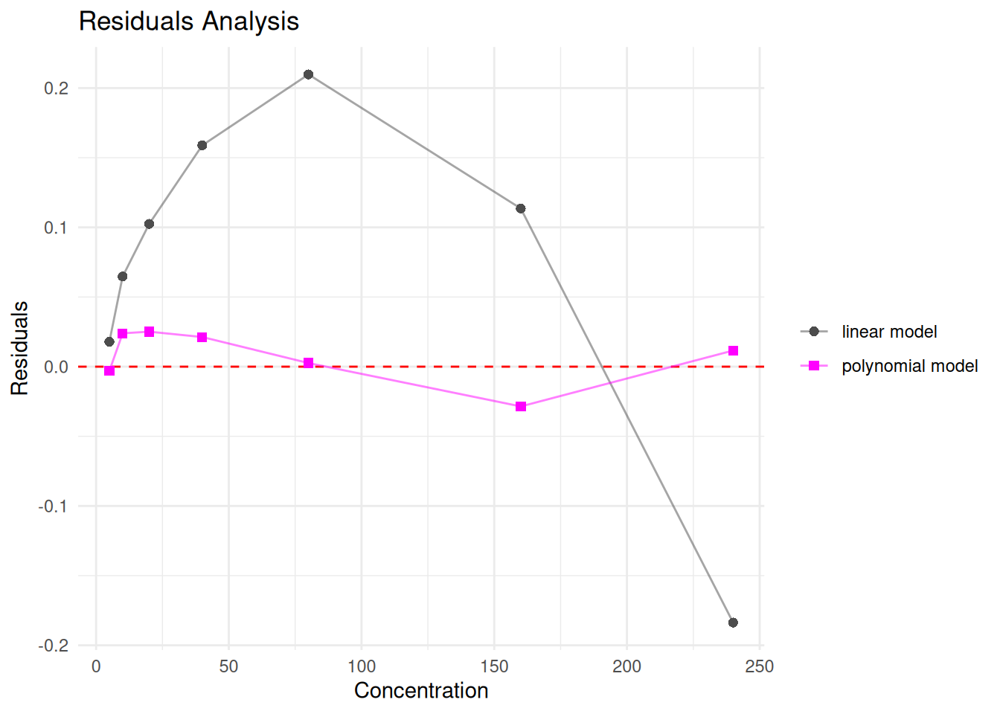
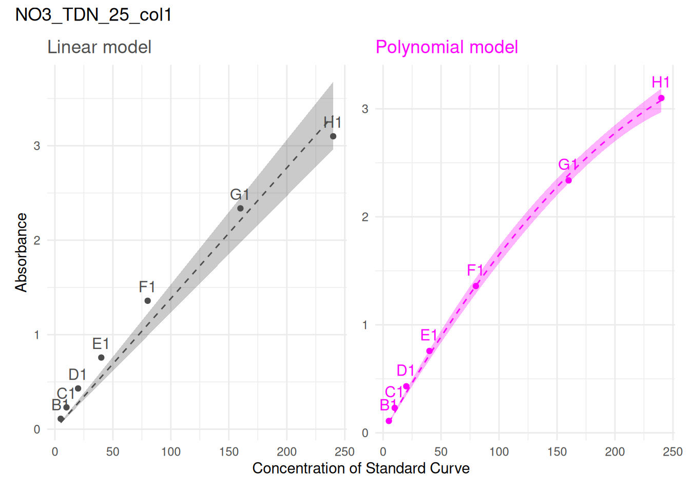
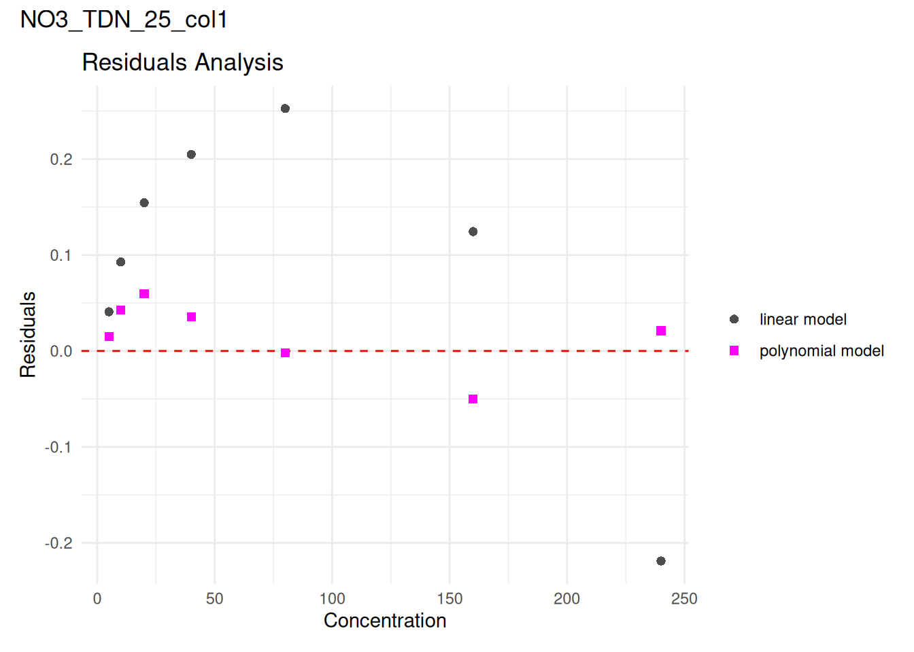
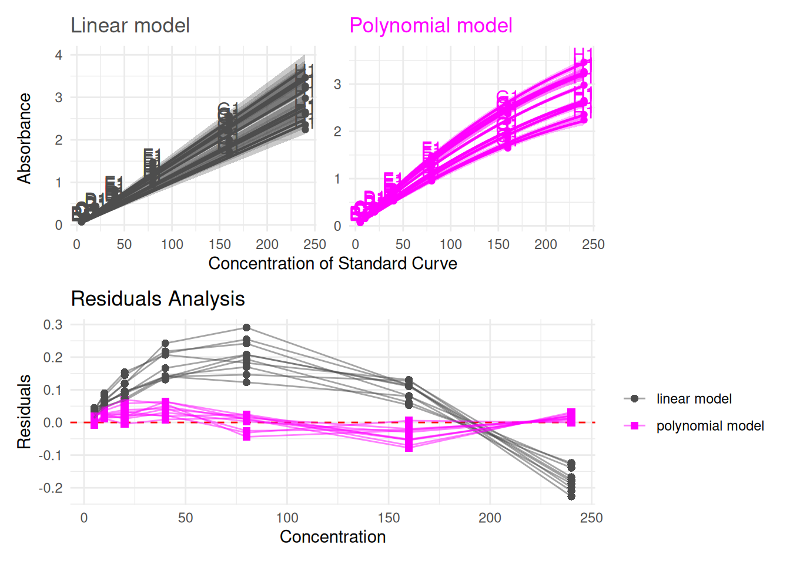
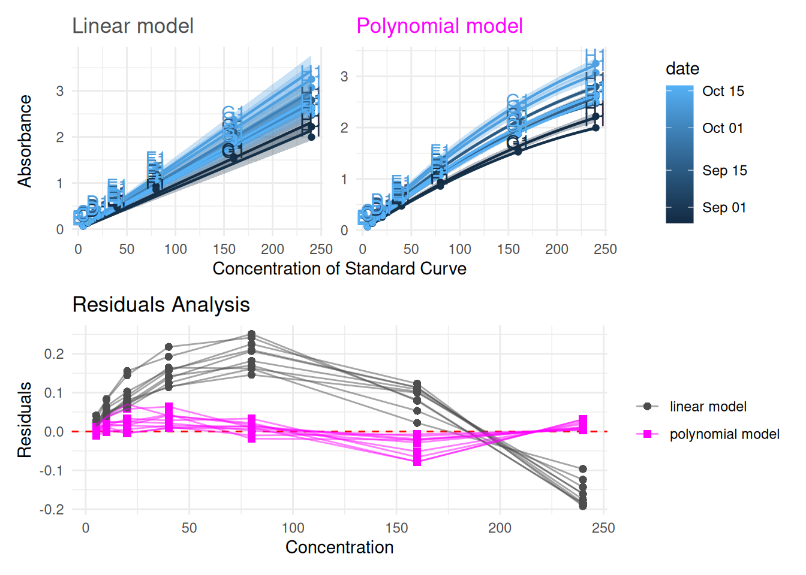

1 - Introduction
- This vignette is a detailed companion to
abs-to-conc’s “Tips for choosing the model” section — that vignette links here instead of walking through the full mechanics inline - Quick recap of why the choice matters: curvature at high absorbance can come from more than one source (the colour-forming reagent becoming limiting, or stray light — see
abs-to-concfor the fuller methodological discussion). Switching to a polynomial model is a reasonable empirical fix either way, but it’s worth actually looking at the fit rather than guessing - What’s covered here: a small set of functions to fit, visually compare, and review the linear-vs-polynomial choice — for a single curve, or across several curves at once
- The building blocks, in the order this vignette introduces them:
-
plot_std()— the underlying standard-curve plotting function (already used elsewhere in the package), extended this round with several new parameters we’ll make use of here -
fit_curve_model()/fit_curve_models()— fitting one or both models for a single curve -
plot_model_comparison()— linear vs. polynomial, side by side -
plot_residual_comparison()— a residuals view, for a more diagnostic look at fit quality -
review_model_choice()— ties everything together: review model choice across several curves at once, either paginated or overplotted
-
- Example dataset used throughout:
std_corrected_TDN— a TDN experiment with standard curve concentrations increased ten-fold, producing absorbance values above 3 and a case where a polynomial model genuinely fits better than linear
1.1 - Plotting a standard curve: plot_std()
plot_std() is the underlying function for visualizing standard curve data — raw absorbance against concentration, with a fitted line overlaid. It is used throughout the package, and it is the foundation everything else in this vignette builds on.
plot_std(std_data, through_origin = TRUE, model = "linear")
-
std_data— a tibble of standard curve data -
through_origin— whether the fitted line is forced through zero (appropriate for blank-corrected absorbance, which should read zero at zero concentration) -
model—"linear"or"poly", controlling which model gets fitted for the overlaid line
By default, curves are grouped, coloured, and labelled using the columns already established elsewhere in the package (column for grouping/colour, well_id for point labels, std_conc/abs for the axes) — but every one of these can now be set explicitly:
-
conc_col,value_col— which columns hold concentration and absorbance -
group_col— which column defines one curve/line per group -
colour_col— which column drives colour (defaults togroup_colif not given, but can be set independently — more on this later) -
label_col— which column labels individual points -
unit_col— optionally show a concentration unit on the x-axis (a column name, a literal string, orNULLfor no unit — the default) -
smooth_alpha,smooth_linewidth,smooth_linetype— control how visible the fitted line is, useful when overplotting many curves at once (see Section 2)
1.2 - A note on colour vs. grouping
group_col and colour_col are two separate ideas that happen to default to the same thing. group_col decides how many curves get fitted — one regression line per unique value, always. colour_col only decides how points and lines are coloured, and by default (colour_col = NULL) simply reuses whatever group_col is, matching what you’d expect from a single, unified variable.
Setting them independently lets you fit one line per curve while colouring by something else entirely — a date, a dilution factor, or any other variable that might actually explain differences between curves. That’s exactly what powers review_model_choice()’s colour_col argument in Section 2: curve_id_col still decides which points belong to which fitted curve, while colour_col decides what the colour itself should mean.
1.3 - Fitting a model: fit_curve_model() and fit_curve_models()
Plotting a fitted line is useful for a first look, but deciding between linear and polynomial properly means actually inspecting the fitted models — their coefficients, p-values, R². fit_curve_model() fits one model (linear or polynomial) for a single curve and returns the model object itself:
curve is a single standard curve’s worth of data — one plate, one curve, filtered down to exactly the rows we want to fit. Here we draw it from std_corrected_TDN: it’s the same 9th curve from that dataset used elsewhere in the package’s own examples, specifically chosen because it’s a case where the polynomial model genuinely fits better than linear — exactly the kind of decision this vignette exists to help make.
fit_curve_model(curve, model = "linear")
#>
#> Call:
#> stats::lm(formula = stats::reformulate(terms, response = value_col),
#> data = curve_data)
#>
#> Coefficients:
#> std_conc
#> 0.01243Same default through_origin argument as plot_std(), with the same meaning.
Printing the model itself, as above, mostly shows the fitted coefficients. But what we’re usually really after is the model’s overall fit quality — its (adjusted) R² and p-values — which comes from calling summary() on it instead:
summary(fit_curve_model(curve, model = "linear"))
#>
#> Call:
#> stats::lm(formula = stats::reformulate(terms, response = value_col),
#> data = curve_data)
#>
#> Residuals:
#> Min 1Q Median 3Q Max
#> -0.18370 0.04129 0.10244 0.13621 0.20977
#>
#> Coefficients:
#> Estimate Std. Error t value Pr(>|t|)
#> std_conc 0.0124279 0.0004877 25.48 2.41e-07 ***
#> ---
#> Signif. codes: 0 '***' 0.001 '**' 0.01 '*' 0.05 '.' 0.1 ' ' 1
#>
#> Residual standard error: 0.1477 on 6 degrees of freedom
#> Multiple R-squared: 0.9908, Adjusted R-squared: 0.9893
#> F-statistic: 649.5 on 1 and 6 DF, p-value: 2.405e-07Since comparing linear against polynomial is the whole point, fit_curve_models() (plural) fits both at once and returns them together in a named list:
models <- fit_curve_models(curve)
models$linear
#>
#> Call:
#> stats::lm(formula = stats::reformulate(terms, response = value_col),
#> data = curve_data)
#>
#> Coefficients:
#> std_conc
#> 0.01243
models$poly
#>
#> Call:
#> stats::lm(formula = stats::reformulate(terms, response = value_col),
#> data = curve_data)
#>
#> Coefficients:
#> std_conc I(std_conc^2)
#> 1.672e-02 -2.127e-05models$linear and models$poly are ordinary lm objects — summary(), coef(), residuals(), and anything else you’d normally do with a fitted model all work as usual. This models list is exactly what feeds into plot_residual_comparison(), further down.
1.4 - Comparing both models visually: plot_model_comparison()
fit_curve_model() gives you the numbers; plot_model_comparison() gives you the picture — it wraps plot_std(), calling it once for each model and placing the two side by side, so you can see at a glance whether the polynomial fit is actually capturing something the linear one misses:
plot_model_comparison(curve)
It shares most of its parameters with plot_std() (conc_col, value_col, through_origin, unit_col, smooth_alpha/smooth_linewidth/smooth_linetype), plus two of its own:
-
curve_id_col— which column identifies a curve. Defaults to"unique_curve_id", and matters more once you’re comparing several curves at once (see Section 2) — for a single curve likecurveabove, it has nothing to do. -
legend_position— a standardggplot2legend position (defaults to"right"). Only shows a legend when there’s actually something meaningful to label: here, with a single curve and nocolour_colgiven, each panel just uses a fixed colour (grey for linear, magenta for polynomial) — there’s nothing to distinguish, so no legend appears regardless oflegend_position. A legend becomes meaningful once you’re colouring by something real, like several curves’ own identities, or a variable such as date — which is exactly the case in Section 2.
Notice that curve_data here isn’t restricted to a single curve at all — plot_model_comparison() works just as well on several curves’ worth of data at once, grouped/coloured by curve_id_col. That’s exactly what makes review_model_choice()’s overplot mode possible later in this vignette, without needing any separate machinery for it.
1.5 - A closer look at fit quality: plot_residual_comparison()
A model can look reasonable on the standard curve plot itself and still have a telling pattern in its residuals — points systematically curving away from zero as concentration increases, for example, which a linear model can hide but a residual plot makes obvious. plot_residual_comparison() takes the models list from fit_curve_models() and plots both models’ residuals together:
plot_residual_comparison(curve, models)
Points near zero with no obvious pattern suggest a good fit; a systematic curve or trend (typically in the linear model’s residuals, when a polynomial fit is actually the better choice) is the sign to look for.
Since this is a ggplot2 object like any other, you can add to it freely. For example, connecting each model’s own points with a line can make a pattern easier to follow at a glance:
plot_residual_comparison(curve, models) + ggplot2::geom_line(alpha = 0.5)
2 - Reviewing model choice across several curves
Looking at one curve at a time is useful, but usually you’ll want to check several — or all — of the curves in a dataset before settling on a model choice for the whole thing. review_model_choice() ties together everything from the previous section: it selects a set of curves (all of them, or a sample), fits both models for each, and builds the same comparison + residual view we’ve just walked through — either one curve at a time, or all at once.
2.1 - Paginated: one curve at a time
By default (overplot = FALSE), review_model_choice() returns a named list, one entry per curve, each containing the fitted models, the comparison_plot, and the residual_plot — exactly the three things we built by hand above, just automated across as many curves as you like.
review <- review_model_choice(std_corrected_TDN, n_curves = 3, seed = 1)
names(review)
#> [1] "NO3_TDN_25_col1" "NO3_TDN_04_col1" "NO3_TDN_07_col1"Each entry is named after its curve, and can be inspected individually. Adding the curve’s name as a title makes each plot self-identifying, which matters once you’re looking at several in sequence:
review[[1]]$comparison_plot + patchwork::plot_annotation(title = names(review)[1])
review[[1]]$residual_plot + patchwork::plot_annotation(title = names(review)[1])
n_curves = NULL (the default) reviews every curve in the dataset — useful for small or exploratory datasets where you’d want to look at everything anyway. seed makes the random selection reproducible; set random_sample = FALSE instead to simply take the first n_curves curves as they appear in the data, rather than a random sample.
2.2 - Overplot: many curves at once
Paging through curves one at a time doesn’t scale well once you’re reviewing more than a handful. overplot = TRUE instead combines all the selected curves into one figure — comparison plot on top, residual plot below — much faster to scan for a dataset-wide pattern:
review_model_choice(std_corrected_TDN, n_curves = 10, overplot = TRUE)
By default, every curve is drawn in the same fixed colour per panel (grey for linear, magenta for polynomial) — with many curves, colouring by curve identity alone tends to produce an unhelpful rainbow with no real meaning behind which colour is which. Colouring by something scientifically relevant instead is often more useful — a date, a dilution factor, anything that might actually explain variation between curves:
review_model_choice(
std_corrected_TDN, n_curves = 10, overplot = TRUE,
colour_col = "date", legend_position = "right")
Two more parameters exist specifically for the overplot case, since the default smooth-line styling (thin, dashed) is easy to lose track of with many curves overlapping: overplot_smooth_alpha, overplot_smooth_linewidth, and overplot_smooth_linetype control the fitted lines’ visibility, defaulting to something more visible than plot_std()’s own defaults.
3 - Using this in your own pipeline
Back in the abs-to-conc vignette’s “Tips for choosing the model” section, the choice between a linear and polynomial model is discussed conceptually — what causes curvature at high absorbance, and why it might justify switching models. This vignette is where that choice actually gets made in practice: pick whichever combination of the functions above fits your dataset — a single quick plot_model_comparison() for one curve, or review_model_choice() across the whole thing — and use the result to decide which model to carry forward into the rest of the abs-to-conc pipeline.
std_corrected_TDN, used throughout this vignette, is a real example included with the package: a Total Dissolved Nitrogen experiment where standard curve concentrations were increased ten-fold compared to a typical N-dosage experiment, producing absorbance values above 3 — exactly the kind of case where a polynomial model genuinely fits better than linear, and a useful dataset to practice this workflow on before applying it to your own data.